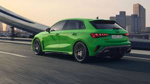
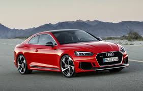
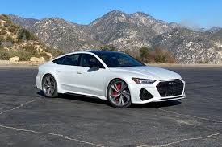

Audi Modele Sport
Explorează gama de modele sport Audi, concepute pentru performanță și experiență de condus intensă.

Audi RS3
Compact și rapid, cu tracțiune quattro și design sportiv.

Audi RS5
Performanță excelentă și linii agresive, ideal pentru pasionați.

Audi RS7
Viteză și confort combinate, super sportiv pentru drumuri lungi.

Audi R8
Supercar emblematic cu motor V10, pentru adevărații pasionați.